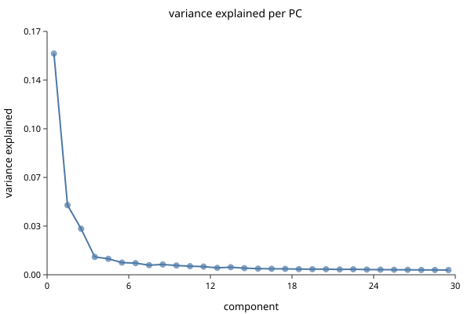
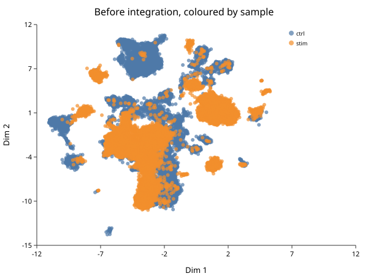
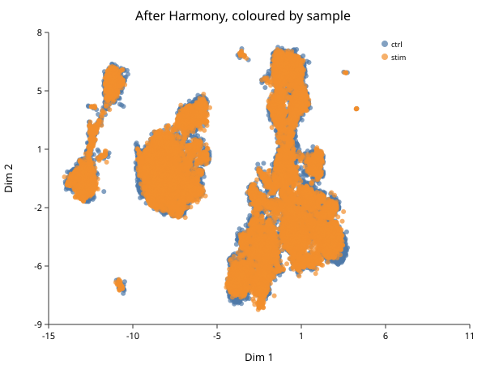
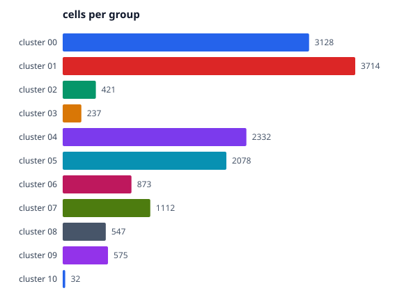
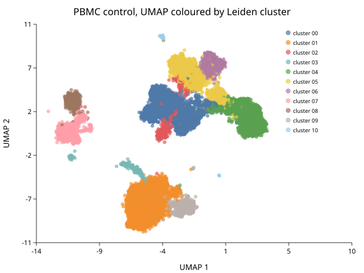

The HBC Single-cell Course, in BioLang
The Harvard Chan Bioinformatics Core teaches a fourteen-lesson introduction to single-cell RNA-seq. It is one of the better free curricula in the field, it is taught in R with Seurat, and it is released under CC BY 4.0.
This book walks the same road in BioLang, on the same data.
Why follow someone else’s syllabus
Because the ordering is the hard part, and theirs is good.
A tool’s documentation organises itself around the tool: here are the functions, here is what each takes. A course organises itself around the learner: here is what you cannot understand until you understand this other thing first. HBC puts the theory of PCA before normalization, which looks backwards until you notice you cannot judge whether a normalization worked without a way to look at the result. They give cluster quality control an entire lesson, long after clustering, because “are these clusters real?” only becomes answerable once you have some.
Why on their data
An earlier version of this material ran on a small synthetic fixture. It was
fast, it needed no download, and it was wrong in a way that mattered: the genes
were named MARK0_000, MARK1_000, and so on. Every mechanical step worked, and
the one thing the annotation lesson exists to teach — looking at LYZ, CD14
and S100A8 together and concluding monocytes — could not be demonstrated at
all.
So this book uses the course’s own PBMC dataset. It costs a download and some runtime. In exchange, the figures show recognisable immune biology, and every number can be compared against what the course reports.
It also surfaced things a tidy fixture never would. Real clusters range from 3,128 cells to 32, and that unevenness alone found a latent crash in the violin plots. Real raw matrices have 737,280 droplets, which found a plotting path that never terminated. Synthetic data tests the code you wrote; real data tests the assumptions you did not know you had made.
What you need
BioLang, the singlecell package, and about 90 MB of extracted matrices from a
3.2 GB archive. All three steps are in Getting the Data.
What this is not
It is not a replacement for the course. Read the HBC lessons for the biology and the reasoning; read these chapters when you want to run the same steps here. It is also not a claim that BioLang reproduces Seurat exactly — it does not, and What Differs from the Course is specific about where and why.
Credit, licence, and the full list of changes are on Attribution and Licence. Read that first if you plan to reuse any of this.
A note on the code
None of it runs in the browser. Every example imports a package and most read or write files, and package imports and file I/O are CLI-only — so these pages show no Run button. Copy the code, or take the scripts and notebook from Downloads.
Attribution and licence
The source
This book follows the curriculum of:
Introduction to Single-cell RNA-seq Harvard Chan Bioinformatics Core (HBC) Mary Piper, Meeta Mistry, Radhika Khetani, Lorena Pantano, Jihe Liu, Will Gammerdinger, and Noor Sohail https://hbctraining.github.io/Intro-to-scRNAseq/
The teaching sequence is theirs, and it is the most valuable thing here: the decision to explain PCA before normalization, to separate the theory of integration from the code that runs it, to give cluster quality control a lesson of its own rather than a paragraph, and to close with the whole workflow written out end to end.
It runs on their dataset as well — the PBMC control/interferon-stimulated experiment their course uses — so the numbers on these pages can be compared against theirs directly. That is the point of this book: it is a translation, not a re-illustration.
If this companion is useful, the course it follows is more so. It is free to read, and it is taught in R with Seurat, which remains the reference implementation that any other tool is measured against.
Licence of the source
The HBC lessons are released under Creative Commons Attribution 4.0 International (CC BY 4.0), declared in the front matter of each lesson:
license: "CC-BY-4.0"
The licence text is at https://creativecommons.org/licenses/by/4.0/.
CC BY 4.0 permits adaptation, including commercially, provided credit is given, the licence is linked, and changes are indicated. This page is that indication.
What was changed
- The language. The course teaches R with Seurat; this book teaches BioLang. No code here is a line-by-line translation of theirs.
- All prose is written from scratch. No text is copied. Where a passage explains the same idea, it explains it in different words.
- No figures are reproduced. Several of the course’s are credited to third parties (Trapnell 2015, Wagner 2016, Hicks 2015) whose licences would each need tracing. Every figure here is generated by the code on the page that shows it.
- No data is redistributed. Getting the Data downloads it from
the authors’ own host, which is what their
download.shdoes. - Fourteen lessons are regrouped into seven chapters. Some course lessons are R environment setup that BioLang does not need. The mapping, and the places where BioLang cannot follow, are in What Differs from the Course.
- The numbers will not match exactly. Same data and same thresholds, but different implementations of HVG selection, PCA and community detection give different cluster counts and boundaries. Where a result should agree, this book says so and shows it; where it will not, it says that too.
Licence of this book
These chapters are part of the BioLang repository and carry its MIT licence, covering the prose and BioLang code written here.
Because this adapts a CC BY 4.0 work, the attribution requirement travels with it: if you reuse these chapters, keep the credit to the HBC training team and the link to their course.
Citing
Cite the course this follows:
@misc{piper2022scrnaseq,
title = {hbctraining/scRNA-seq_online: scRNA-seq Lessons from HCBC},
author = {Piper, Mary and Mistry, Meeta and Liu, Jihe and
Gammerdinger, William and Khetani, Radhika},
year = {2022},
month = {1},
publisher = {Zenodo},
doi = {10.5281/zenodo.5826256},
url = {https://doi.org/10.5281/zenodo.5826256}
}
The HBC team asks for citations directly, and gives the reason: they show the community’s needs, earn recognition for the work, and support further funding for their teaching. That is a good reason, and it costs you one line.
The data
The PBMC experiment is from Kang et al., Nature Biotechnology 2018 — peripheral blood mononuclear cells from lupus patients, split into a control sample and one stimulated with interferon-beta. The HBC course hosts a packaged copy; this book downloads that copy and does not redistribute it.
Getting the data
Everything in this book runs on the HBC course’s own dataset. Three steps, once.
1. Install BioLang
Linux / macOS
curl -fsSL https://lang.bio/install.sh | sh
Windows (PowerShell)
iwr -useb https://lang.bio/install.ps1 | iex
Check it:
bl --version
2. Install the singlecell package
Download singlecell-starter.zip, unzip it, and from inside:
bl install ./singlecell
There is no package registry yet, and
bl install --git <url>clones a whole repository into the package slot — which cannot work for a package living in a subdirectory of one. Installing from a local path is the supported route, so the kit ships the package rather than pointing at it.
3. Download the matrices
python get-data.py
Be warned about the size. The archive is 3.2 GB; the two directories
this book needs total about 90 MB. Zip keeps its index at the end of the
file, so there is no way to pull two members out of a remote archive without
fetching the whole thing — HBC’s own download.sh has the same problem. The
script downloads once, extracts what is used, and deletes the archive, so the
3.2 GB is transient rather than resident. Pass --keep to hold on to it.
The rest of the archive is R objects — a 2.2 GB seurat_integrated.RData.bz2
among them — that BioLang cannot read and this book does not need.
When it finishes you have:
ctrl_raw/ barcodes.tsv.gz features.tsv.gz matrix.mtx.gz
stim_raw/ barcodes.tsv.gz features.tsv.gz matrix.mtx.gz
Run everything from the directory containing those.
Check it worked
import "singlecell" as sc
let ctrl = sc.load("ctrl_raw")
println("droplets: " + str(ctrl.n_cells))
println("genes: " + str(ctrl.n_genes))
which prints:
droplets: 737280
genes: 33538
737,280 is every barcode the chemistry can produce, not every cell — the vast majority are empty droplets. Sorting that out is Quality Control.
What the experiment is
Peripheral blood mononuclear cells from lupus patients (Kang et al., Nature Biotechnology 2018), in two samples:
| Sample | |
|---|---|
ctrl_raw | untreated control |
stim_raw | stimulated with interferon-beta |
Two samples of the same cells under different conditions is what makes this dataset worth teaching on: it has real biological differences and a real batch structure, so Integration has something honest to work against rather than a planted offset.
A note on time
This is a real dataset and BioLang runs it single-threaded. On a laptop:
| Step | Roughly |
|---|---|
| Load one raw matrix | 2 s |
| Filter to cells | 5 s |
| Normalize, HVG, PCA, neighbours, cluster | 15 s |
| The same on both samples merged | 40 s |
| Harmony on 30,000 cells | minutes |
Nothing here needs a cluster, but the two-sample chapters are not instant.
The Biology and the Matrix
Follows HBC lessons 01 (Intro to scRNA-seq) and 02 (Generation of the count matrix).
What the experiment buys you
Bulk RNA-seq measures an average. Grind up a tissue, sequence the RNA, and you learn what the average cell was transcribing. The average is a real number, and it is often the wrong one.
The classic failure: suppose genes A and B are positively correlated within every cell type, but the cell types sit at different overall levels. Average across the mixture and the correlation can invert. You will confidently report that A suppresses B when in every actual cell it does the opposite. This is Simpson’s paradox with a pipette, and it is not an edge case — it is the default hazard whenever a tissue contains more than one kind of cell, which is every tissue.
Single-cell RNA-seq measures cells separately, so the grouping the average destroyed is still there to recover. That buys you which cell types are present and in what proportion, rare populations a bulk average dilutes away, how expression shifts along a differentiation trajectory, and — the one that changes conclusions most often — differential expression within a cell type between conditions. “Gene X is up in disease” is a different claim from “gene X is up in the monocytes of treated patients”, and only the second tells you where to look next.
That last distinction is exactly what this dataset is built for: the same patients’ cells, control and interferon-stimulated.
What it costs you
The data is large. This one is 33,538 genes by 737,280 droplets per sample.
Stored densely that is 24 billion entries; stored sparsely it is about 10
million. sc.load returns a sparse matrix for that reason.
Sequencing per cell is shallow. Droplet methods detect perhaps 10–50% of the transcriptome in a given cell, so a zero is ambiguous: the gene was off, or it was on and you missed it. You cannot tell which from the number.
This ambiguity is the single most important fact about the data type. The vocabulary is worth being careful about: scRNA-seq data is often called zero-inflated, meaning more zeros than a count model predicts. Recent analyses argue it mostly is not — the zeros are about what sequencing depth would predict, and a plain negative binomial handles them. They are real dropouts, not evidence of a second process. This matters because “zero-inflated” invites you to add machinery for it, and the machinery can do harm.
Biological variation you did not ask about. Transcription is bursty. Cells cycle. Cells respond to neighbours. Identity is sometimes a gradient rather than a category. All real biology, none of it the biology you are studying, all of it in the same matrix.
Technical variation. Capture efficiency differs per cell, amplification is not uniform, libraries differ in quality, and batches differ from each other — sometimes more than the conditions do. That is why integration gets two lessons.
Where the matrix comes from
BioLang starts one step downstream of the sequencer. Worth knowing what that step did.
In a droplet experiment each droplet ideally captures one cell and one bead. The bead carries millions of oligos sharing a cell barcode, so everything sequenced from that droplet is stamped with the same identifier. Each oligo also carries a unique molecular identifier (UMI), a short random sequence differing between oligos on the same bead.
The UMI is the clever part. PCR amplifies some molecules more than others, so read counts are a distorted measure of how much RNA was there. But two reads sharing a UMI and a cell barcode and a gene came from one original molecule. Collapse them, count distinct UMIs, and you have counted molecules instead of reads. Amplification bias largely disappears.
Cell Ranger does the demultiplexing, barcode correction, alignment and UMI
collapsing, and writes three files: barcodes.tsv (the columns), features.tsv
(the rows) and matrix.mtx (the non-zero counts).
BioLang does not run Cell Ranger, and neither does Seurat. That work is upstream of both. What BioLang does is read its output:
import "singlecell" as sc
let ctrl = sc.load("ctrl_raw")
println("droplets: " + str(ctrl.n_cells))
println("genes: " + str(ctrl.n_genes))
println("first genes: " + str(sc.get_genes(ctrl) |> take(5)))
droplets: 737280
genes: 33538
first genes: [MIR1302-2HG, FAM138A, OR4F5, AL627309.1, AL627309.3]
Two things to notice. The gene names are real symbols, which is what makes annotation possible later. And 737,280 is every barcode the chemistry can produce — the overwhelming majority are empty droplets that caught only ambient RNA. The matrix as loaded is mostly nothing.
The object is a plain BioLang record — matrix, genes, barcodes,
n_cells, n_genes. Later steps add fields rather than replacing it, so
keys(obj) always tells you what has happened.
What a count actually means
One entry is: the number of distinct mRNA molecules from gene G that were captured, reverse transcribed, amplified, sequenced, and successfully assigned to barcode C.
Every verb can fail, and each fails at a rate that varies between cells. Holding onto that is what stops you over-reading a small number later. A count of zero is weak evidence of absence. A count of one is weak evidence of anything.
Next
Separating the cells from the empty droplets is Quality Control.
Quality Control
Follows HBC lessons 03 (QC setup), 04 (Cell Ranger QC), and 05 (Quality control).
The thing being filtered is not a cell
The matrix has one column per barcode, and the course is careful to say barcode rather than cell, because 737,280 of them are not cells:
- Empty droplets that caught only ambient RNA — transcripts from cells that lysed during dissociation. Few genes, low counts, and the vast majority of the matrix.
- Dying cells, which leak cytoplasmic RNA while mitochondria stay intact longer, so the mitochondrial fraction climbs as the cytoplasm drains.
- Doublets — two cells in one droplet, appearing as one barcode with roughly twice the content and an impossible hybrid identity.
Look before you cut
sc.qc computes per-cell and per-gene metrics and attaches them without
removing anything.
import "singlecell" as sc
let raw = sc.load("ctrl_raw")
let scored = sc.qc(raw)
write_text("qc-raw.svg",
sc.plot_qc_scatter(scored, "All droplets, before filtering"))

That is every barcode in the run. Two features carry the whole decision.
The dense wedge running up and to the right is the real cells: as a droplet captures more UMIs it detects more distinct genes, and the two rise together.
The flat spur along the bottom is the problem. Those droplets accumulate UMIs without accumulating genes — the signature of low-complexity content: ambient RNA, dying cells, or a population dominated by a handful of transcripts. Neither histogram shows this on its own. A cell with few genes and few UMIs is an empty droplet; few genes but many UMIs is a different animal entirely, and only the joint view distinguishes them.
The enormous blob at the origin is the empty droplets, and it is most of the 737,280.
The three metrics
| Metric | Low means | High means |
|---|---|---|
| UMIs per cell | empty droplet, or a small cell | doublet, or a large cell |
| Genes per cell | empty droplet, low complexity | doublet |
| % mitochondrial | usually fine | dying or stressed cell |
Note the second column. Every one of these has a benign explanation. A plasma cell genuinely has fewer distinct genes because it is devoting itself to antibody transcripts. Cardiomyocytes are genuinely full of mitochondria. A threshold right for PBMCs will delete a real population in heart tissue. This is why the course insists on plotting distributions rather than applying remembered numbers.
Applying the cuts
import "singlecell" as sc
let raw = sc.load("ctrl_raw")
let clean = raw
|> sc.filter_genes(3)
|> sc.filter_cells(250, 100000, 20.0)
println("before: " + str(raw.n_cells) + " droplets, " + str(raw.n_genes) + " genes")
println("after: " + str(clean.n_cells) + " cells, " + str(clean.n_genes) + " genes")
before: 737280 droplets, 33538 genes
after: 15049 cells, 15576 genes
737,280 barcodes down to 15,049 cells, and 33,538 genes to 15,576.
That is close to the course’s result but not the same filter, and the difference is worth being exact about. Theirs has four criteria:
nUMI >= 500 & nGene >= 250 & log10GenesPerUMI > 0.80 & mitoRatio < 0.20
sc.filter_cells expresses two of them — a gene floor and a mitochondrial cap.
It has no UMI floor and no complexity term. Applying all four by hand on this
sample gives 14,847 cells against this chapter’s 15,049: a difference of
202 cells, or 1.3%.
The 202 are mostly low-complexity droplets — high UMI counts spread over few
genes, the flat spur along the bottom of the plot above. The complexity term
log10GenesPerUMI > 0.80 is what removes them, and it is the criterion worth
adding by hand if you are reproducing the course exactly:
import "singlecell" as sc
let raw = sc.load("ctrl_raw")
let m = cell_qc(raw.matrix, raw.genes)
let genes = col(m, "n_genes")
let umis = col(m, "total_counts")
let mito = col(m, "pct_mito")
let keep = range(0, raw.n_cells) |> filter(|i| {
umis[i] >= 500.0 and genes[i] >= 250.0 and mito[i] < 20.0 and
(log10(genes[i]) / log10(umis[i])) > 0.80
})
println("cells: " + str(len(keep)))
cells: 14847
The chapters that follow use the two-criterion form, because it is the one the package exposes and the 1.3% does not change any conclusion here. If you need the course’s numbers exactly, use the block above.
Two filters, in this order and for a reason. filter_genes(3) drops genes seen
in fewer than three cells — a gene detected once cannot support a statistical
claim, and carrying eighteen thousand such genes costs memory and inflates the
multiple-testing burden later. filter_cells(min_genes, max_genes, max_pct_mito)
drops barcodes: the lower bound removes empty droplets, the upper catches
doublets, the mitochondrial cap removes dying cells.
The thresholds here are the course’s: at least 250 genes, mitochondrial fraction under 20%. The upper gene bound is deliberately loose because the lower bound and the mitochondrial cap are doing the work on this dataset.
What survived
import "singlecell" as sc
let clean = sc.load("ctrl_raw")
|> sc.filter_genes(3)
|> sc.filter_cells(250, 100000, 20.0)
write_text("qc-clean.svg", sc.plot_qc_scatter(sc.qc(clean), "After filtering"))

The spur along the bottom is gone and the blob at the origin with it. What remains is the diagonal band, which is what a clean sample looks like.
The mitochondrial cap needs gene symbols
max_pct_mito finds genes whose symbol starts with MT-. If your features file
carries Ensembl IDs (ENSG00000198804) rather than symbols, nothing matches, the
mitochondrial fraction is zero for every cell, and the filter silently does
nothing.
It will not warn you. This dataset’s features.tsv has three columns — Ensembl
ID, symbol, feature type — and sc.load takes the symbol, so the cap works here.
Check that your gene names look like names.
What Cell Ranger knew that you no longer do
The course spends a lesson on Cell Ranger’s web_summary.html. BioLang cannot
read that file, and most of what it reports can be recomputed from the matrix
anyway — cell counts, median genes per cell, UMI distributions.
Two things cannot. Sequencing saturation (how much another lane would buy) and fraction of reads mapped to the transcriptome are properties of the reads, and the reads are gone by the time you have a matrix. If those matter — and for judging whether an experiment was deep enough, they do — read them in Cell Ranger’s viewer before moving on.
Judge the filter by what survives
The only real test of a threshold is whether the biology is still there afterwards. Filter, cluster, and check you still have the populations you expected; if a cell type vanished between raw and filtered, the threshold found it, not the noise.
That check needs clusters, which is Normalization and PCA and then Clustering. QC is not finished until you have been round that loop once.
Normalization and PCA
Follows HBC lessons 06 (Theory of PCA) and 07 (SCTransform normalization).
Why the course teaches PCA first
This looks wrong the first time. Normalization comes before PCA in the pipeline, so why teach PCA first?
Because you cannot judge a normalization without a way to look at its result. “Did this normalization work?” means “are cells now grouped by biology rather than by sequencing depth?”, and answering it requires a projection. Teaching the tool before the step that needs it is the right way round.
PCA in one paragraph
You have a cell described by 15,576 gene measurements — a point in 15,576 dimensions. Most of those dimensions carry nothing: genes nobody expresses, genes everybody expresses equally, genes that are noise. Many move together, because genes work in programs.
PCA finds new axes as weighted combinations of genes, ordered so the first captures the most variance, the second the most of what remains. The first ten or twenty usually carry the structure; the rest carry noise.
The intuition to keep: each PC is a gene program, and a cell’s coordinate on it is how strongly that cell runs the program. PC1 is often “which broad lineage is this”, and later PCs get more specific.
import "singlecell" as sc
let obj = sc.load("ctrl_raw")
|> sc.filter_genes(3)
|> sc.filter_cells(250, 100000, 20.0)
|> sc.normalize()
|> sc.variable_genes(2000)
|> sc.run_pca(30)
write_text("elbow.svg", sc.plot_elbow(obj, 30))

Read where it flattens. Components before the bend carry structure; after it, noise. The bend is rarely sharp, and that is fine — taking a few too many PCs costs much less than cutting into real signal, so err high. The course settles on a similar range for this data.
Why raw counts cannot go into PCA
Two problems, and they compound.
Depth. One cell yields 20,000 UMIs, its neighbour 5,000. Every gene in the first looks four times higher, and PC1 becomes “how deeply was this cell sequenced” — a technical axis dominating the plot.
Mean–variance coupling. Count variance grows with the mean, so highly expressed genes vary more in absolute terms simply because they are high. PCA maximises variance, so without correction it selects for expression level rather than information.
The standard fix handles both — scale each cell to a common total, then log1p:
import "singlecell" as sc
let obj = sc.load("ctrl_raw")
|> sc.filter_genes(3)
|> sc.filter_cells(250, 100000, 20.0)
|> sc.normalize(10000.0)
println("normalised layer present: " + str(contains(keys(obj), "norm_matrix")))
normalize(10000.0) is counts-per-ten-thousand followed by log1p. The 10,000
is arbitrary and does not matter; the log does the work, compressing the high end
so a handful of loud genes stop dominating.
Note it adds norm_matrix rather than overwriting matrix. Raw counts stay
available, which matters because differential expression should use counts, not
logs.
Variable genes
Most genes are uninformative for distinguishing cell types — off everywhere or on everywhere. Selecting genes that vary more than expected for their expression level focuses PCA on structure.
import "singlecell" as sc
let obj = sc.load("ctrl_raw")
|> sc.filter_genes(3)
|> sc.filter_cells(250, 100000, 20.0)
|> sc.normalize()
|> sc.variable_genes(2000)
println("HVGs: " + str(len(sc.get_hvg_genes(obj))))
“More than expected for their expression level” is the important clause. A raw variance ranking returns the highest-expressed genes, which you already knew about. The selection bins genes by mean expression and ranks dispersion within each bin, so a moderately expressed gene that switches cleanly between cell types can outrank a loud constitutive one.
2,000 is the conventional number and what the course uses.
SCTransform
Log-normalization has a known weakness: it does not fully remove the depth–expression relationship, and residual depth structure leaks into the PCs. SCTransform fits a regularized negative binomial per gene with sequencing depth as a covariate and uses the Pearson residuals as corrected values.
import "singlecell" as sc
let obj = sc.load("ctrl_raw")
|> sc.filter_genes(3)
|> sc.filter_cells(250, 100000, 20.0)
|> sc.sctransform()
println("sctransform applied to " + str(obj.n_cells) + " cells")
Use it when depth varies a lot across cells, or when integrating samples
sequenced to different depths. Use plain normalize when you want something
simple, fast and easy to explain.
The two produce different downstream clusters. Pick one and keep it for the whole analysis rather than switching partway — and say which you used, because a reader cannot tell from the figures.
Next
You now have cells positioned in a space where distance means something. This dataset has two samples, and that space is probably still organised partly by sample rather than by biology — which is Integration.
Integration
Follows HBC lessons 08 (CCA theory) and 09 (Harmony).
The course splits integration into two lessons — one for the theory, one for the code — and the split is worth keeping, because this is the step where a plausible-looking result is most likely to be wrong.
The problem, on this data
Merge the two samples and cluster them together:
import "singlecell" as sc
# Cells are filtered per sample; genes must match across the two for the merge,
# so gene filtering happens after it.
let ctrl = sc.load("ctrl_raw") |> sc.filter_cells(250, 100000, 20.0)
let stim = sc.load("stim_raw") |> sc.filter_cells(250, 100000, 20.0)
let merged = sc.merge(ctrl, stim, "ctrl", "stim")
|> sc.filter_genes(3)
|> sc.normalize()
|> sc.variable_genes(2000)
|> sc.run_pca(30)
|> sc.neighbors(15)
|> sc.cluster_leiden(15, 0.5)
println("merged: " + str(merged.n_cells) + " cells, " +
str(sc.get_clusters(merged) |> unique |> len) + " clusters")
let sample = merged.batch_ids |> map(|x| str(x))
write_text("integration-before.svg",
sc.plot_embedding(merged, sample, "Before integration, coloured by sample"))
merged: 30043 cells, 14 clusters

Look at the colours. Several islands are almost entirely one sample — a blue island beside an orange island, repeatedly. The same cell type is appearing twice, once per sample, and clustering is dutifully calling them different populations.
That is the problem integration exists to solve.
What is actually being corrected here
An honest caveat the mechanics can obscure. These two samples differ in two ways at once:
- They were prepared and sequenced separately — a technical batch effect.
- One was stimulated with interferon-beta — a real, large biological effect, and the entire point of the experiment.
Integration cannot distinguish them. Aligning the samples removes some of the interferon response along with the batch effect. That is a deliberate trade, and it is the right one for the purpose of matching cell types across conditions: you want the CD14 monocytes of both samples to land in one cluster so you can then ask how they differ. It would be exactly wrong to integrate and then declare the conditions similar — you removed the difference yourself.
Integrate to align cell types. Test for condition effects on the uncorrected counts, within cell type.
If your samples were biological replicates processed together and they already overlap, do not integrate at all. Cluster first; if the samples already mix, stop. Integration is a repair, not a routine step.
Harmony
Harmony (Korsunsky et al., 2019) works in PCA space rather than gene space, which is why it is fast. It alternates two steps:
- Soft cluster the cells, with a penalty that rewards clusters containing a mixture of samples. A cluster that is 100% one sample is penalised, pushing toward clusters that represent cell types rather than batches.
- Correct within each cluster by regressing the batch out, producing a per-cell shift.
The second step is the one that matters, and the reason is easy to miss. Subtracting one global per-batch offset assumes the batch effect points the same way for every cell type. It usually does not — a batch can shift T cells one way and monocytes another. Correcting within clusters lets the correction differ per cell type, which one global offset cannot do.
import "singlecell" as sc
let ctrl = sc.load("ctrl_raw") |> sc.filter_cells(250, 100000, 20.0)
let stim = sc.load("stim_raw") |> sc.filter_cells(250, 100000, 20.0)
let merged = sc.merge(ctrl, stim, "ctrl", "stim")
|> sc.filter_genes(3) |> sc.normalize() |> sc.variable_genes(2000)
|> sc.run_pca(30) |> sc.neighbors(15) |> sc.cluster_leiden(15, 0.5)
let corrected = sc.harmony(merged, merged.batch_ids)
let sample = merged.batch_ids |> map(|x| str(x))
write_text("integration-after.svg",
sc.plot_embedding(corrected, sample, "After Harmony, coloured by sample"))

sc.integrateis not Harmony. It is a single global per-batch centering — a reasonable deterministic baseline, and the thing this book warns about above. Usesc.harmonywhen you mean Harmony. The two are easy to confuse becauseintegrateis the more obvious name, and until recently the package exposed only the weaker one.
How to tell whether it worked
This is the part that gets skipped, and it is the part that matters.
A batch-mixing metric alone is maximised by collapsing every cell onto a single point. Perfect mixing, zero biology. So mixing is never sufficient evidence. Every check must come in a pair:
- Samples mix — each island now contains cells from both, in roughly the proportions the samples contribute.
- Cell types stay apart — the populations distinguishable before integration are still distinguishable after.
Compare the two figures above on both counts. The sample-specific islands are gone, and the islands themselves are still there — perhaps a dozen distinct groups rather than one cloud. Both halves hold.
If you only ever check the first, you cannot detect over-correction, which is the characteristic failure of every integration method. A UMAP that looks beautifully mixed and has quietly merged your CD4 and CD8 T cells is a worse outcome than no integration at all, because it looks like success.
The BioLang test suite for harmony_integrate asserts both as a pair for exactly
this reason: a mutation that subtracted the regression intercept made the batches
mix perfectly and collapsed cell-type separation from 15.91 to 0.00, and a
mixing-only test still passed.
CCA, and why it is theory here
Canonical Correlation Analysis is the idea behind Seurat’s original integration, and it is worth understanding even though you will not run it at scale in BioLang.
PCA on either dataset alone finds the directions of greatest variance in that dataset, and a batch effect is often the largest single source. So PC1 becomes the batch. CCA instead looks for directions correlated between the two datasets. A batch effect present in only one cannot correlate with anything in the other, so it scores poorly. Shared biology — T cells behaving like T cells in both samples — scores well.
BioLang has a cca builtin and that property is demonstrable on small inputs.
But Seurat’s CCA works on a cells × cells cross-product, and BioLang’s
Matrix::svd is O(n⁴) — it stalls above roughly a hundred cells. Thirty thousand
is out of the question. The theory is runnable and the practice is not; use
Harmony, which is what lesson 09 does anyway.
Next
With cell types aligned across samples, the numbered clusters can be named: Clustering and then Markers and Annotation.
Clustering
Follows HBC lessons 10 (Clustering) and 11 (Clustering quality control).
Graph-based clustering
Three steps, and no distance threshold anywhere — which is why it suits this data.
- Build a k-nearest-neighbour graph. Each cell connects to its k closest neighbours in PCA space.
- Weight the edges by how much two cells’ neighbourhoods overlap. Two cells sharing most of their neighbours get a strong edge; a chance proximity gets a weak one. This is what makes the result robust in high dimensions, where raw distances become nearly uniform.
- Find communities — groups more densely connected internally than externally — with Leiden or Louvain.
import "singlecell" as sc
let obj = sc.load("ctrl_raw")
|> sc.filter_genes(3)
|> sc.filter_cells(250, 100000, 20.0)
|> sc.normalize()
|> sc.variable_genes(2000)
|> sc.run_pca(30)
|> sc.neighbors(15)
|> sc.cluster_leiden(15, 0.5)
let labels = sc.get_clusters(obj)
println("clusters: " + str(labels |> unique |> len))
write_text("proportions.svg", sc.plot_proportions(obj))
clusters: 11

Eleven clusters from 15,049 cells, ranging from 3,714 cells down to 32. That spread is normal and worth noticing: PBMCs are dominated by a few common populations, and the interesting biology is often in the small ones.
Resolution is the knob, and it is not a truth setting
resolution controls how readily the algorithm splits a community. Low values
give few large clusters, high values many small ones.
There is no correct resolution. There is only one appropriate to the question. If you want broad lineages, go low. If you want to separate activation states within a lineage, go high and expect to justify each split.
import "singlecell" as sc
let base = sc.load("ctrl_raw")
|> sc.filter_genes(3)
|> sc.filter_cells(250, 100000, 20.0)
|> sc.normalize()
|> sc.variable_genes(2000)
|> sc.run_pca(30)
|> sc.neighbors(15)
for r in [0.2, 0.5, 1.0] {
let c = sc.cluster_leiden(base, 15, r)
println("resolution " + str(r) + " -> " +
str(sc.get_clusters(c) |> unique |> len) + " clusters")
}
Report the resolution you used. An analysis that does not state it cannot be reproduced, because the cluster count is a function of it. The course lands on a similar count to the eleven above; do not expect an exact match, for the reasons in What Differs from the Course.
Looking at it
import "singlecell" as sc
let obj = sc.load("ctrl_raw")
|> sc.filter_genes(3) |> sc.filter_cells(250, 100000, 20.0)
|> sc.normalize() |> sc.variable_genes(2000) |> sc.run_pca(30)
|> sc.neighbors(15) |> sc.cluster_leiden(15, 0.5)
write_text("umap.svg", sc.plot_umap(obj, "PBMC control, UMAP coloured by Leiden cluster"))

Read the topology, not the distances. Clusters 1 and 9 sit together at the bottom; clusters 7 and 8 together on the left; 0, 2, 5 and 6 form the large mass in the centre with 4 beside them. The next chapter shows those groupings are the monocytes, the B cells, and the T cells with NK adjacent — so the layout recovered relationships nobody told it about.
UMAP is for looking, not for measuring
UMAP preserves local neighbourhoods. It does not preserve distance between clusters. Two clusters appearing adjacent are not necessarily more similar than two at opposite ends — that spacing is partly an artifact of the layout, and it changes with the seed.
So: never argue from the picture. “These populations are related because they are next to each other” is not an argument by itself. The clustering happened in PCA space; the UMAP is a rendering of it, and every quantitative claim should come from the space, not the rendering.
This deserves more emphasis here than in most tutorials, because BioLang’s UMAP was until recently producing a single featureless blob for any input — attraction with no reachable repulsion. The clustering was correct the whole time and the marker tables were correct the whole time; only the picture was wrong. If your embedding and your markers ever disagree, believe the markers.
The lesson most tutorials skip
The algorithm always returns clusters. Run it on pure noise and you get clusters — tidy, well-separated, meaningless. So “I have clusters” is not evidence of anything, and the course is right to give this its own lesson placed after clustering, because the question only becomes answerable once you have something to interrogate.
Four checks, in the order I would run them.
Is the cluster driven by QC metrics? If one cluster is just the low-UMI cells or the high-mitochondrial cells, it is a quality artifact wearing a cluster’s clothing.
import "singlecell" as sc
let obj = sc.load("ctrl_raw")
|> sc.filter_genes(3) |> sc.filter_cells(250, 100000, 20.0)
|> sc.normalize() |> sc.variable_genes(2000) |> sc.run_pca(30)
|> sc.neighbors(15) |> sc.cluster_leiden(15, 0.5)
let d = sc.cluster_diagnostics(obj)
println("mean silhouette: " + str(round(d.mean_score, 3)) +
" (scored " + str(d.n_scored) + " of " + str(d.n_cells) + " cells)")
mean silhouette: 0.143 (scored 2150 of 15049 cells)
A silhouette compares every cell against every other, which is quadratic — at
15,049 cells that is 226 million distance computations, and it does not finish
in an interpreter. So it scores a deterministic subsample, the way
scikit-learn’s sample_size does. Even subsampled this takes about three
minutes; it is a diagnostic you run once, not something to put in a loop.
0.14 is low, and that is expected here rather than alarming: silhouette rewards compact well-separated blobs, and PBMC T-cell subsets genuinely grade into one another. Read it as a relative measure across resolutions, not an absolute score.
Is it driven by cell cycle? Proliferating cells of different types can cluster
by phase rather than identity. sc.cell_cycle scores cells so you can check.
Is it one sample? With both samples merged, a cluster that is 95% one sample while the others are mixed is either an uncorrected batch effect or a genuinely condition-specific population — the second is a real finding and a much stronger claim needing much more evidence.
Is it stable? A cluster that dissolves when you nudge the resolution or the number of PCs was never robust.
sc.cluster_stability(obj) sweeps a set of resolutions and reports, for each,
the cluster count, the mean silhouette, and the adjusted Rand index against the
neighbouring resolution — a cluster set that survives a change in resolution
scores high, one that dissolves scores low.
It is not run here, and the reason is worth stating rather than hiding: it computes a silhouette per resolution, and one silhouette on this sample takes about three minutes. The default five-resolution sweep is therefore a quarter-hour job. It is worth running once on a real analysis; it is not worth putting in a tutorial you want people to follow along with.
Cluster 10 above has 32 cells. Treat anything that small with suspicion until its markers say otherwise — it may be doublets, or debris, or something real and rare, and only the marker table will tell you which.
Next
Clusters are numbered, not named. Turning numbers into cell types is Markers and Annotation.
Markers and Annotation
Follows HBC lessons 12 (Seurat cheatsheet) and 13 (Marker identification).
This is the chapter the whole book exists for. Everything before it is mechanical; this is where a numbered cluster becomes a cell type.
The panel view
The fastest way to annotate PBMCs is to ask a known marker panel where it lands.
import "singlecell" as sc
let obj = sc.load("ctrl_raw")
|> sc.filter_genes(3) |> sc.filter_cells(250, 100000, 20.0)
|> sc.normalize() |> sc.variable_genes(2000) |> sc.run_pca(30)
|> sc.neighbors(15) |> sc.cluster_leiden(15, 0.5)
let panel = ["CD3D","IL7R","CD8A","GNLY","NKG7","MS4A1","CD79A",
"CD14","LYZ","S100A8","FCGR3A","MS4A7","FCER1A","CST3","PPBP"]
write_text("dotplot.svg",
sc.expr_dotplot(obj, panel, "Canonical PBMC markers by cluster"))

Read it and the annotation falls out:
| Cluster | Markers | Cell type |
|---|---|---|
| 0, 5, 6 | CD3D, IL7R | CD4 T cells |
| 2, 10 | CD3D, IL7R (weaker) | T cells |
| 4 | CD8A, GNLY, NKG7 | NK / cytotoxic |
| 7, 8 | MS4A1, CD79A | B cells |
| 1 | CD14, LYZ, S100A8 | CD14 monocytes |
| 9 | FCGR3A, MS4A7 | CD16 monocytes |
| 3 | LYZ, CST3, FCER1A | dendritic cells |
Now go back and look at the UMAP. Clusters 1 and 9 sit together — both monocytes. Clusters 7 and 8 sit together — both B cells. Clusters 0, 2, 5, 6 form the central mass with 4 beside them — T cells with NK adjacent. The layout recovered the lineage relationships without being told them, which is the strongest evidence available that the whole pipeline is working.
Why the dot plot and not a violin
The dot plot encodes two quantities at once — dot size is the fraction of cells detecting the gene, dot colour is mean expression among those cells — and that pairing is exactly what separates a real marker from an artifact.
A large pale dot means “expressed in most cells of this cluster, weakly”. A small intense dot means “a few cells, strongly”, and usually means be suspicious.
A violin hides this. Two clusters with identical violins can differ completely in what fraction of their cells express the gene at all:
import "singlecell" as sc
let obj = sc.load("ctrl_raw")
|> sc.filter_genes(3) |> sc.filter_cells(250, 100000, 20.0)
|> sc.normalize() |> sc.variable_genes(2000) |> sc.run_pca(30)
|> sc.neighbors(15) |> sc.cluster_leiden(15, 0.5)
write_text("violin-LYZ.svg", sc.plot_violin(obj, "LYZ"))
write_text("feature-LYZ.svg", sc.plot_feature(obj, "LYZ"))


LYZ is high in clusters 1, 3 and 9 and near zero elsewhere — the monocytes and dendritic cells, and nothing else. The feature plot says the same thing spatially.
Finding markers you did not know to look for
The panel above assumes you already know PBMC biology. When you do not:
import "singlecell" as sc
let obj = sc.load("ctrl_raw")
|> sc.filter_genes(3) |> sc.filter_cells(250, 100000, 20.0)
|> sc.normalize() |> sc.variable_genes(2000) |> sc.run_pca(30)
|> sc.neighbors(15) |> sc.cluster_leiden(15, 0.5)
let markers = sc.marker_table(obj, 1, 0)
println(head(markers, 8))
marker_table(obj, a, b) compares two clusters. The columns:
| Column | Meaning |
|---|---|
log2fc | Log2 fold change between the groups |
pct_a, pct_b | Fraction of cells in each group detecting the gene |
pvalue | Raw test p-value |
padj | After multiple-testing correction |
Read pct before you read p
The p-values here will be tiny — often reported as zero. Do not take them seriously as evidence.
The test asks “could these two groups have the same expression?”, and you already know the answer is no, because you defined the groups by clustering on this same expression data. The clustering separated the cells; the test then confirms they are separated. That is circular, and it is why marker p-values are best read as a ranking device rather than as inference. A published p-value of 10⁻³⁰⁰ from a marker table means “this gene ranked high”, not “this finding is certain”.
The columns carrying real information are pct_a and pct_b. A gene detected in
95% of cluster cells and 5% of the rest is a usable marker regardless of its
p-value. A gene with a huge fold change detected in 10% of the cluster is not —
it is a few cells with high counts, and it will not replicate.
Rank by fold change, filter by detection rate, use the p-value only to break ties.
Markers against everything else
Comparing one cluster to one other answers a narrow question. Usually you want each cluster against all remaining cells:
import "singlecell" as sc
let obj = sc.load("ctrl_raw")
|> sc.filter_genes(3) |> sc.filter_cells(250, 100000, 20.0)
|> sc.normalize() |> sc.variable_genes(2000) |> sc.run_pca(30)
|> sc.neighbors(15) |> sc.cluster_leiden(15, 0.5)
write_text("markers.svg", sc.plot_markers(obj, 5))
The underlying find_all_markers builtin runs a Mann-Whitney U test per gene per
cluster and applies one Benjamini-Hochberg correction across the whole table,
not per cluster. Correcting within each cluster separately would understate the
multiple-testing burden, since the family is every test you ran.
From markers to cell types
This step is manual, and there is no honest way around it. You match marker genes against known biology — literature, marker databases, or a reference atlas — and assign names.
Three cautions the course is right to stress:
A cluster without a clean marker set may not be a cell type. It may be doublets, stressed cells, or an over-split fragment of a real population. Cluster 10 above has 32 cells; look at its markers before giving it a name.
Markers are context-dependent. A gene marking a population in blood may mark something else in tumour. Markers from a PBMC atlas do not transfer unexamined to solid tissue — and this dataset is the PBMC atlas case, which is why it works so cleanly here.
Record your reasoning. “Cluster 1 = monocytes” is not reproducible. “Cluster 1: CD14+ LYZ+ S100A8+, FCGR3A−, 3714 cells — classical CD14 monocytes” is. Six months later you will not remember, and a reviewer cannot check the first version at all.
The Seurat verbs, translated
For readers coming from the course’s R:
| Seurat | BioLang |
|---|---|
CreateSeuratObject | sc.load / sc.from_matrix |
PercentageFeatureSet + subset | sc.qc → sc.filter_cells |
NormalizeData | sc.normalize |
SCTransform | sc.sctransform |
FindVariableFeatures | sc.variable_genes |
RunPCA | sc.run_pca |
ElbowPlot | sc.plot_elbow |
FindNeighbors | sc.neighbors |
FindClusters | sc.cluster_leiden |
RunUMAP + DimPlot | sc.plot_umap |
FindMarkers | sc.marker_table |
FindAllMarkers | find_all_markers |
FeaturePlot | sc.plot_feature |
VlnPlot | sc.plot_violin |
DotPlot | sc.expr_dotplot |
RunHarmony | sc.integrate |
merge | sc.merge |
Next
Everything above in one script: The Whole Workflow.
The Whole Workflow
Follows HBC lesson 14 (scRNA-seq workflow).
The course closes by writing the whole analysis out in one place, and it is the most useful lesson in the set. Individual steps make sense in isolation; the shape of the thing only becomes visible end to end.
One sample, written out
import "singlecell" as sc
let obj = sc.load("ctrl_raw")
|> sc.filter_genes(3) # gene kept if seen in >= 3 cells
|> sc.filter_cells(250, 100000, 20.0) # min genes, max genes, max % mito
|> sc.normalize(10000.0) # CP10K then log1p
|> sc.variable_genes(2000) # HVGs, to focus PCA
|> sc.run_pca(30) # linear dimensionality reduction
|> sc.neighbors(15) # kNN graph, k = 15
|> sc.cluster_leiden(15, 0.5) # communities at resolution 0.5
println("cells: " + str(obj.n_cells))
println("clusters: " + str(sc.get_clusters(obj) |> unique |> len))
write_text("umap.svg", sc.plot_umap(obj, "PBMC control, UMAP by cluster"))
cells: 15049
clusters: 11
Nine lines, and every parameter that shapes the result is visible in them. That is the property to preserve — the numbers are the analysis, and hiding them inside a function makes the analysis unreviewable.
Or with the decisions printed for you
sc.standard runs that pipeline and reports what it did:
import "singlecell" as sc
let obj = sc.load("ctrl_raw")
|> sc.standard(nil, 2000, 15, 250, 100000, 20.0)
It prints the equivalent explicit pipeline, the cells in and out, and a table of
every parameter marked [set] or [default] with a note on what each does — and
tells you that resolution is the one to tune first.
This is not a black box. It prints the explicit form, so it teaches the
pipeline while running it, and every decision stays inspectable in
obj.decisions. A convenience function that concealed these numbers would
produce results nobody could review; one that prints them lets you graduate to
the explicit form the moment you need to deviate.
Both samples
The version this dataset is really for:
import "singlecell" as sc
# Cells are filtered per sample; genes must stay identical across the two for
# the merge, so gene filtering happens after it.
let ctrl = sc.load("ctrl_raw") |> sc.filter_cells(250, 100000, 20.0)
let stim = sc.load("stim_raw") |> sc.filter_cells(250, 100000, 20.0)
let merged = sc.merge(ctrl, stim, "ctrl", "stim")
|> sc.filter_genes(3)
|> sc.normalize()
|> sc.variable_genes(2000)
|> sc.run_pca(30)
|> sc.neighbors(15)
|> sc.cluster_leiden(15, 0.5)
println("merged: " + str(merged.n_cells) + " cells, " +
str(sc.get_clusters(merged) |> unique |> len) + " clusters")
let corrected = sc.integrate(merged, merged.batch_ids)
merged: 30043 cells, 14 clusters
The ordering is not cosmetic.
filter_genesbefore the merge leaves the two samples with different gene sets, andsc.mergerefuses:sc_merge_objects() requires identical genes in identical order. Refusing is the right behaviour — quietly aligning by position would produce a matrix where column 400 means one gene in one half and another gene in the other.
Checking it
import "singlecell" as sc
let obj = sc.load("ctrl_raw")
|> sc.filter_genes(3) |> sc.filter_cells(250, 100000, 20.0)
|> sc.normalize() |> sc.variable_genes(2000) |> sc.run_pca(30)
|> sc.neighbors(15) |> sc.cluster_leiden(15, 0.5)
println(sc.cluster_diagnostics(obj))
println(sc.cluster_stability(obj))
On real data you have no ground truth, so the diagnostics matter more, not less. The checks that carried weight in this book were the ones where two independent views had to agree: the marker dot plot and the UMAP topology both say clusters 1 and 9 are monocytes and 7 and 8 are B cells. Neither was told about the other.
What the workflow does not include
Being explicit about the boundary, because a pipeline that runs to completion invites the belief that it is finished.
- Annotation is not in it. The clusters are numbered. Naming them is manual and needs biology the data cannot supply — see Markers and Annotation.
- Differential expression between conditions is not in it. With ctrl and stim in hand it is the obvious next question, and it needs a pseudobulk design with replicates. Testing across cells treats cells from one sample as independent replicates, which they are not, and produces confidently wrong p-values.
- Doublet detection is not in it.
sc.doubletsandsc.flag_doubletsexist; add them if your loading concentration was high. - Cell cycle regression is not in it.
sc.cell_cyclescores cells so you can check whether it matters before deciding to remove it.
Timings
Measured on a laptop, single-threaded, on this dataset:
| Step | |
|---|---|
| Load one raw matrix (737,280 × 33,538) | 2 s |
| Filter to 15,049 cells | 5 s |
| Normalize → HVG → PCA → neighbours → cluster | 15 s |
| UMAP and plot | 25 s |
| Both samples merged (30,043 cells) | 40 s |
| Harmony on 30,043 cells | minutes |
Nothing here needs a cluster, but the two-sample chapters are not instant.
Where to go next
Read the course itself, at https://hbctraining.github.io/Intro-to-scRNAseq/. It teaches the same material in R with Seurat, which remains the implementation everything else is measured against. Credit and licence are on Attribution and Licence, and the places BioLang and Seurat part company are in What Differs from the Course.
What differs from the course
A companion that claims to match and then quietly substitutes something weaker is worse than one that lists its gaps. Here they are.
The lesson map
Fourteen lessons, seven chapters. Course lessons that exist to set up an R environment have no BioLang counterpart and are folded into their neighbours.
| HBC lesson | Covered in | Status |
|---|---|---|
| 01 Intro to scRNA-seq | The Biology and the Matrix | Full |
| 02 Generation of the count matrix | The Biology and the Matrix | Read-only |
| 03 Quality control setup | Quality Control | Folded in |
| 04 Cell Ranger QC | Quality Control | Partial |
| 05 Quality control | Quality Control | Full |
| 06 Theory of PCA | Normalization and PCA | Full |
| 07 SCTransform | Normalization and PCA | Full |
| 08 Integration: CCA theory | Integration | Theory only |
| 09 Integration: Harmony | Integration | Full |
| 10 Clustering | Clustering | Full |
| 11 Clustering quality control | Clustering | Full |
| 12 Seurat cheatsheet | Markers and Annotation | Translated |
| 13 Marker identification | Markers and Annotation | Full |
| 14 The whole workflow | The Whole Workflow | Full |
The numbers will not match exactly
Same data, same thresholds, different implementations. Expect agreement on shape and disagreement on digits.
The pipelines are not identical, and the differences are specific:
| This book | The course | |
|---|---|---|
| QC filter | gene floor + mito cap | + UMI floor + complexity |
| Cells kept (ctrl) | 15,049 | 14,847 with their full filter |
| Normalization | normalize (CP10K + log1p) | SCTransform |
| PCs | 30 | 40 |
| Clustered on | one sample at a time | the integrated object |
The course also clusters at resolution 0.8, where this book uses 0.5.
Can you align them? Yes — exactly
None of those differences are limitations. BioLang has sc.sctransform, takes
any PC count, and the filter can be written by hand. Matching the course’s
configuration on the course’s object — both samples, their four-criterion
filter, SCTransform, Harmony, 40 PCs, resolution 0.8 — gives:
merged: 29629 cells
clusters: 17
The course’s marker lesson assigns identities to clusters 0 through 16: 17 clusters. Same count, on the same data, from the same settings.
For contrast, on the control sample alone:
cells: 14847
SCTransform / 40 PCs / res 0.8 -> 14 clusters
log1p / 30 PCs / res 0.5 -> 10 clusters
Same cells, same code, two parameter sets. The difference was the pipeline, not the implementation.
aligned.bl in Downloads runs the single-sample comparison;
exact.bl runs the full integrated configuration and takes about five minutes.
What this cost to make possible
The integrated run did not work at first — it died with an out-of-memory error
on a 32 GB machine. sc_sctransform was paying for its output three times: a
dense copy of the sparse input, a second array for the residuals, and then every
element boxed into a Value inside nested lists, about 4 + 4 + 12 GB. Pearson
residuals are dense by construction, so 4 GB is real; the other 16 were not. It
now streams the sparse input into one flat array and returns a matrix.
So the honest sequence is: the numbers did not match, the reason turned out to be a memory bug rather than a numerical one, and once that was fixed they matched exactly.
What still will not match
Cluster numbering is arbitrary in both — cluster 7 here is not cluster 7 there. Beyond that, HVG selection bins differently, the PCA is a different implementation, and Leiden breaks ties differently, so the boundaries between adjacent clusters will not be identical cell for cell even when the count is. The count agreeing is strong evidence; it is not proof of an identical partition.
This book’s chapters keep the simpler settings, because log-normalization is easier to explain and fifteen seconds beats five minutes while you are learning the shape of the workflow. That is a teaching choice, and now an explicit one with the cost measured.
The three real gaps
Lesson 02 — generating the count matrix. This covers Cell Ranger: demultiplexing, barcode correction, alignment, UMI collapsing. BioLang does none of it, and neither does Seurat — it is upstream of both. BioLang starts where Cell Ranger stops. The chapter explains what happened upstream, because you cannot interpret a UMI count without knowing what a UMI is, but it does not pretend to run it.
Lesson 04 — Cell Ranger’s own QC report. The course reads the
web_summary.html Cell Ranger emits. BioLang has no parser for it. Nearly all
of the same quantities can be recomputed from the matrix, and the QC chapter
does — but sequencing saturation and fraction of reads mapped to the
transcriptome are properties of the reads, and the reads are gone by the time
you have a matrix. If you have the file, read it in Cell Ranger’s viewer.
Lesson 08 — CCA at realistic scale. BioLang has a cca builtin and the
theory is runnable on small inputs. But Seurat’s CCA works on a cells × cells
cross-product, and BioLang’s Matrix::svd is O(n⁴) — it stalls above roughly a
hundred cells. So the theory is demonstrable and the practice is not. Use
Harmony, which is what lesson 09 does anyway and which BioLang implements at
full scale.
Things this book found that the course cannot tell you
Running the course’s data through a different implementation is a good way to find bugs in the implementation. Several turned up while this book was written, and they are worth knowing about because they shape what you should trust:
- UMAP produced a featureless blob for any input. The layout had attraction but no reachable repulsion. Fixed, with tests. If you are running an older build and your embedding looks like a single cloud, this is why — and note that the clustering and marker tables were correct throughout. If your embedding and your markers disagree, believe the markers.
- Reading one gene across 15,000 cells took seven minutes, because the sparse count matrix was deep-copied on every value clone. Fixed; it is now free.
- Plotting the raw droplets never finished, because the scatter path emitted one vector circle per point and accumulated them quadratically. Large scatters are now rasterised.
- Violin plots crashed on unevenly sized clusters. The padding value for
ragged columns was
-inf, which is not valid JSON. An evenly sized synthetic fixture never triggered it; real clusters ranging from 3,714 cells to 32 do immediately.
The last one is the general lesson. Synthetic data tests the code you wrote; real data tests the assumptions you did not know you had made.
Downloads
None of the code in this book runs in the browser: every example imports the
singlecell package and most read or write files, and package imports and file
I/O are CLI-only. So the pages show no Run button — copy the code, or take one
of these.
The starter kit
singlecell-starter.zip — the package, the data-download script, every chapter script and the notebook.
unzip singlecell-starter.zip && cd singlecell-starter
bl install ./singlecell
python get-data.py
bl run ch01-biology-and-matrix.bl
Full setup, including installing BioLang itself, is in Getting the Data.
The data script
get-data.py — fetches the two 10x matrices from the
HBC course’s own host. 3.2 GB down, ~90 MB kept; the archive is deleted unless
you pass --keep. Also included in the kit.
Chapter scripts
One per chapter, each self-contained.
| Chapter | Script | Blocks |
|---|---|---|
| The Biology and the Matrix | ch01-biology-and-matrix.bl | 1 |
| Quality Control | ch02-quality-control.bl | 3 |
| Normalization and PCA | ch03-normalization-pca.bl | 4 |
| Integration | ch04-integration.bl | 2 |
| Clustering | ch05-clustering.bl | 4 |
| Markers and Annotation | ch06-markers.bl | 4 |
| The Whole Workflow | ch07-workflow.bl | 4 |
These are not quick, and here is what they actually cost. Measured on a laptop, single-threaded:
Script Time ch012 s ch02~1 min ch03~2 min ch043 min 35 s ch053 min 50 s ch06over 9 min ch07over 9 min Two things drive this. Each block on a page is written to stand alone, so a reader can copy any one without having run the others — which means a concatenated chapter rebuilds the pipeline from the raw matrix once per block. And two operations are inherently expensive on 15,000 cells:
plot_markersruns a test per gene per cluster and takes 5 minutes by itself, andcluster_diagnosticscomputes a silhouette and takes 3.
ch06andch07were confirmed to run only in pieces, not as single scripts inside a ten-minute budget. Nothing in them is broken — every block produced the figure on its page — but if you want to follow along interactively, lift a single block rather than running a whole chapter.
The course-aligned pipeline
aligned.bl — the course’s settings rather than this book’s: their four-criterion QC filter, SCTransform, 40 PCs, resolution 0.8. It prints both cluster counts side by side so you can see what the parameters cost:
cells: 14847
SCTransform / 40 PCs / res 0.8 -> 14 clusters
log1p / 30 PCs / res 0.5 -> 10 clusters
exact.bl — the full integrated configuration: both samples, their filter, SCTransform, Harmony, 40 PCs, resolution 0.8. This is the one that reproduces the course’s cluster count:
merged: 29629 cells
clusters: 17 (HBC reports 17)
Five minutes, and it needs about 4 GB free. See What Differs from the Course for what this does and does not settle — the count matching is not proof of an identical partition.
The notebook
hbc-scrnaseq.bln — prose and code together, runnable end to end:
bl notebook hbc-scrnaseq.bln
Several chapters write .svg figures into the current directory. The notebook
carries the same content as the book, minus the figures, whose paths would not
resolve beside a downloaded file.
What you cannot download here
The dataset itself. It belongs to the study authors and is hosted by the HBC
training team; get-data.py fetches it from them rather than redistributing a
copy. See Attribution and Licence.